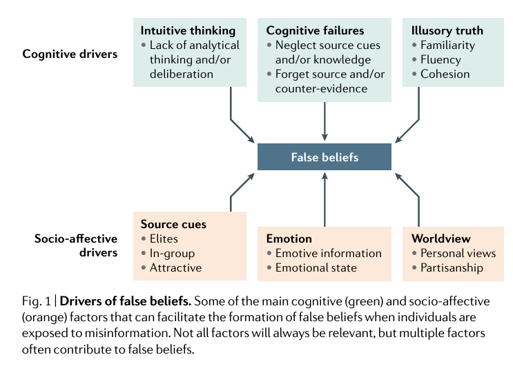

Thinking Critically in the Age of MDM
🔹 1. Why Misinformation is Persuasive
📌 Misinformation exploits predictable flaws in human reasoning. These include:
Cognitive Biases → Mental shortcuts that distort how we interpret information.
Heuristics → Quick, intuitive judgments that simplify decision-making but can lead to errors.
Emotional Triggers → Fear, outrage, and humor bypass critical thinking, making falsehoods more persuasive.
🔑 Key Takeaways from the Study:
ğŸ› ï¸ Reflection Questions:
1️⃣ Think about the last time you saw viral misinformation online.
What made it catch your attention?
Did it spark an emotional reaction (e.g., outrage, fear, humor)?
Did you feel an impulse to share or comment? Why?
2️⃣ What makes false information feel true?
Have you ever encountered information that you later realized was misleading?
Why did it seem believable at first?
What mental shortcuts do you think played a role in your initial reaction?
3️⃣ Why do people struggle to correct misinformation once they believe it?
Even when presented with evidence, why do people sometimes cling to false beliefs?
What factors (social, emotional, cognitive) make it hard to admit we were wrong?
🔹 2. Common Psychological Traps That Make Us Vulnerable
📌 Why do smart people fall for misinformation? The answer lies in predictable cognitive and socio-affective biases that shape the way we process information. These mental shortcuts—while useful in everyday decision-making—can also make us susceptible to false beliefs.

🧠Cognitive Drivers: How Our Brains Trick Us
1️⃣ Intuitive Thinking (Fast, automatic, and effortless decisions)
Instead of critically analyzing information, we often rely on quick judgments.
Trap: If something feels right, we believe it—even when it’s false.
Example: A viral meme confirms what you already suspect, so you trust it without fact-checking.
2️⃣ Cognitive Failures (We neglect key details that could expose falsehoods)
People tend to forget the source of information while remembering the message itself.
Trap: Even if we initially question misinformation, we may later recall it as true.
Example: “I don’t remember where I read this, but I know it’s true.”
3️⃣ Illusory Truth Effect (Repetition makes lies seem true)
If we see a claim over and over, we assume it must be accurate.
Trap: Our brain equates familiarity with truthfulness.
Example: A health hoax resurfaces every few months, making it feel true over time.
❤️ Socio-Affective Drivers: How Our Emotions & Social Ties Trick Us
4️⃣ Source Cues (Who says it matters more than what they say)
We’re more likely to trust information from people we admire or agree with.
Trap: We dismiss credible sources if they conflict with our group’s beliefs.
Example: “If my favorite politician said it, it must be true.”
5️⃣ Emotional Triggers (Fear, outrage, and humor override logic)
Misinformation is often highly emotional, which makes it more memorable and shareable.
Trap: When we’re angry or scared, we think less critically.
Example: “This news made me furious—I had to share it immediately!”
6️⃣ Worldview & Partisanship (We filter reality through personal beliefs)
Our existing ideologies, values, and group loyalties shape what we accept as truth.
Trap: We unconsciously reject facts that contradict our worldview.
Example: A fact-check proves a false claim wrong, but people cling to their beliefs anyway.
🔠💡 Reflection Questions Before Moving Forward
💠Think about a time you believed or almost believed misinformation.
Which of these cognitive traps influenced your judgment?
Did emotion or social factors play a role in why it seemed true?
How can you counter these biases when evaluating information in the future?
🧠Quick Review Question Before moving on, test your understanding with the question below!
[1]:
from utils.questions import create_multiple_choice, create_fill_in_the_blank
create_fill_in_the_blank("A strong emotional reaction can override _______ thinking.", "critical")
create_multiple_choice(
"Why do emotional triggers make misinformation more persuasive?",
["A) They force people to think critically",
"B) They make people more likely to question the information",
"C) They cause fast, emotional reactions instead of logical thinking",
"D) They help people better evaluate the credibility of sources"],
"C) They cause fast, emotional reactions instead of logical thinking",
)
create_fill_in_the_blank(
"When we seek out and believe information that aligns with our pre-existing beliefs, we are demonstrating _______ bias.",
"confirmation"
)
create_multiple_choice(
"Which of the following is an example of the Illusory Truth Effect?",
["A) Believing a false claim because you’ve seen it repeatedly",
"B) Trusting a source without checking its credibility",
"C) Assuming something is true because a celebrity shared it",
"D) Spreading misinformation to fit a political agenda"],
"A) Believing a false claim because you’ve seen it repeatedly",
)
🔹 Case Study: Plandemic – A Blueprint for Disinformation
📖 Source: Plandemic Revisited: A Product of Planned Disinformation Amplifying the COVID-19 “Infodemic”
🔹 The Top 5 False Claims from Plandemic – And Why They Were Wrong
No scientific evidence supports the claim that COVID-19 was intentionally engineered or released.
Multiple studies confirm that SARS-CoV-2 originated in nature, likely from animal-to-human transmission (Andersen et al., 2020).
Intelligence agencies worldwide, including the WHO and CDC, found no evidence of deliberate release.
⌠Why this claim was effective:
It played on fear and distrust of authority, making people feel like they were uncovering a hidden truth.
There is NO scientific basis for the idea that wearing masks suppresses immune function.
Masks reduce the spread of respiratory droplets, protecting both the wearer and others.
Doctors, surgeons, and healthcare workers wear masks for hours daily without adverse effects.
🛑 Debunked by: CDC, WHO, dozens of peer-reviewed studies proving that masks reduce infection rates.
⌠Why this claim was effective:
It appealed to anti-mask sentiments and discomfort, reinforcing existing biases.
Clinical trials involving millions of people have proven COVID-19 vaccines safe and effective.
There is zero evidence linking vaccines to population control, infertility, or DNA alteration.
The CDC, WHO, and independent health agencies worldwide have extensively reviewed vaccine safety.
🛑 Debunked by:
Multiple peer-reviewed vaccine safety studies
⌠Why this claim was effective:
It exploited vaccine hesitancy and spread fear through anecdotes and out-of-context data.
Hospitals did not fabricate death counts for profit—COVID-19 deaths were reported based on medical diagnoses and testing.
Excess mortality data shows that COVID-19 deaths were likely undercounted, not inflated (Katz et al., 2021).
Doctors and hospitals faced overwhelming strain, not financial incentive, during the pandemic.
🛑 Debunked by: CDC, WHO, fact-checkers, and public health statistics showing actual death tolls.
⌠Why this claim was effective:
It triggered distrust in the healthcare system, making people less likely to seek medical care.
The Bill & Melinda Gates Foundation has donated billions to public health efforts, not profited from vaccines.
No evidence supports claims that Gates or other global figures orchestrated COVID-19.
This claim relied on deep-seated conspiracy theories about global elites controlling society.
🛑 Debunked by: Investigative reports, independent financial audits, and Gates’ public financial disclosures.
⌠Why this claim was effective:
It fed into pre-existing conspiracy theories about global control and pharmaceutical companies.
🥠Video: How We Can Protect Truth in the Age of MDM
Now that we understand why misinformation spreads, what can be done to slow or stop it?
Are social media companies responsible for fixing misinformation, or should individuals take more responsibility?
What role should governments and fact-checkers play?
Sinan Aral’s TED Talk is an excellent bridge between understanding why misinformation spreads and how we can fight back against it using data-driven strategies.
[2]:
#Import appropriate library
from IPython.display import YouTubeVideo
# Extract YouTube Video ID from the URL
video_id = "-7ORAKULel4"
# Embed the video
YouTubeVideo(video_id, width=600, height=450)
[2]:
[3]:
create_multiple_choice(
"What is one of the main reasons misinformation spreads so quickly on social media?",
["People actively seek out misinformation",
"Misinformation is designed to be more engaging than true information",
"Social media companies prioritize fact-checking over engagement",
"Misinformation is usually shared only by bots"],
"Misinformation is designed to be more engaging than true information"
)
create_multiple_choice(
"According to the video, what role do social media algorithms play in spreading misinformation?",
["They prevent misinformation from going viral",
"They prioritize engagement, which can amplify falsehoods",
"They flag misinformation immediately before it spreads",
"They promote only fact-checked content"],
"They prioritize engagement, which can amplify falsehoods",
)
create_multiple_choice(
"What is a suggested approach to slowing the spread of misinformation?",
["Banning all social media discussions on controversial topics",
"Allowing only news organizations to post on social media",
"Increasing transparency in social media algorithms and promoting fact-checking",
"Encouraging users to report any post they disagree with"],
"Increasing transparency in social media algorithms and promoting fact-checking",
)
🔹 3. Strengthening Critical Thinking: The Key to MDM Resistance
📌 Misinformation is designed to exploit gaps in critical thinking.
Before we learn how to prebunk false information, we need to strengthen our critical thinking habits so we can resist deception in real-time.
ğŸ› ï¸ Critical Thinking is NOT About Skepticism—It’s About Rational Evaluation Misinformation thrives when critical thinking is weak. To counter this, we must recognize the common errors in reasoning that false information exploits.
🔠Common Errors in Critical Thinking That Misinformation Exploits ✅ Overconfidence Bias – “I’m too smart to be fooled!”
Why it’s dangerous: Misinformation preys on confidence—the more sure we are, the less likely we are to fact-check . ✅ Thinking in Absolutes – “It’s 100% true or 100% false!”
Why it’s dangerous: Reality is often nuanced, but misinformation thrives on black-and-white framing. ✅ Trusting “Gut Feelings†Over Evidence – “It just feels true!”
Why it’s dangerous: Misinformation is designed to feel intuitive—but feelings are not evidence. ✅ Echo Chamber Thinking – “Everyone I know believes this!”
Why it’s dangerous: Misinformation spreads within like-minded communities, making it feel more credible.
🔹 A Simple Critical Thinking Framework: “Think Before You Share†📌 Before accepting or sharing any claim online, ask yourself these five questions:
1️⃣ Who is the source?
Is this a reliable, fact-based source, or an opinionated outlet?
Does the author have expertise in this topic?
2️⃣ What’s the evidence?
Are credible sources cited?
Is this claim consistent with known facts?
3️⃣ Could I be emotionally biased?
Does this make me angry, scared, or excited?
Would I still believe this if it supported the opposite view?
4️⃣ Is this claim repeated elsewhere?
Have multiple independent sources reported it?
Or is it just one source amplifying itself?
5️⃣ What’s the intention?
Does this content inform, persuade, or manipulate?
Who benefits if I believe this?
ğŸ› ï¸ Quick Critical Thinking Exercise 💡 Scenario: You see a breaking news post on social media:
“Government admits 5G towers are linked to rising health issues!”
✅ How would you apply critical thinking before sharing?
🔹 Revisiting Plandemic: Applying Critical Thinking
📌 Now that we’ve explored cognitive biases and strengthened our critical thinking skills, let’s revisit the case study of Plandemic—this time with a critical lens.
The viral success of Plandemic was not an accident—it was designed to bypass critical thinking and exploit psychological vulnerabilities. But how could we have spotted the deception sooner?
🛠Applying the “Think Before You Share†Framework Misinformation thrives when we don’t pause to evaluate it carefully. Let’s break down Plandemic using our five-step critical thinking framework.
1️⃣ Who is the Source? ❓ Who created Plandemic and were they credible experts?
The documentary featured discredited figures rather than scientific experts.
It lacked peer-reviewed research and relied on unsupported claims.
💡 Critical Thinking in Action:
Cross-check credentials—Is the source a recognized expert in the field?
Look beyond titles—A person claiming to be a scientist does not mean they are an expert in virology or epidemiology.
2️⃣ What’s the Evidence? ❓ Did Plandemic present strong, verifiable evidence?
The video used cherry-picked data, misleading statistics, and out-of-context claims.
Many claims were refuted by public health agencies, but the documentary never acknowledged this counter-evidence.
💡 Critical Thinking in Action:
Seek peer-reviewed research—Are these claims backed by scientific studies or only by personal testimony?
Check if opposing evidence exists—A strong claim should stand up to multiple independent analyses.
3️⃣ Could Emotions Influence Belief? ❓ Did Plandemic trigger emotional reactions to override logic?
It framed information using fear, outrage, and distrust, making people less likely to fact-check.
The film portrayed viewers as “brave truth-seekers”, appealing to a sense of personal empowerment.
💡 Critical Thinking in Action:
Identify emotional triggers—Does the claim invoke fear, anger, or urgency to pressure immediate action?
Pause before sharing—Misinformation thrives on fast reactions, so take time to verify before engaging.
4️⃣ Is This Claim Repeated Elsewhere? ❓ Was Plandemic widely supported by independent, reliable sources?
The claims were rejected by scientific institutions, yet the video relied on echo chamber amplification.
The documentary spread through social media and conspiracy forums, not scientific or journalistic outlets.
💡 Critical Thinking in Action:
Use lateral reading—What do reputable fact-checkers and independent sources say?
Compare coverage—If a claim is true, it should be verified by multiple independent sources, not just one niche community.
5️⃣ What’s the Intention? ❓ Did Plandemic seek to inform, or did it have another motive?
The film encouraged distrust in public health, promoting conspiracy theories over verified science.
It framed itself as “forbidden knowledge”, a classic misinformation tactic to make false claims feel exclusive and valuable.
💡 Critical Thinking in Action:
Question the motive—Is the goal to educate and inform, or to persuade and provoke?
Ask who benefits—Is this information designed to promote truth, or to manipulate belief for a specific agenda?
🚀 Next Up 📌 Critical thinking helps us recognize misinformation—but what if we could prepare our minds before exposure?
Next, we’ll explore prebunking, a proactive strategy to inoculate ourselves against misinformation before we encounter it.
By anticipating manipulation tactics, we can resist deception in real-time.
🔹 4. Prebunking – How to Inoculate Against Misinformation
📠Source: First Draft News – A Guide to Prebunking
📊 Example: Studies show that playing “fake news†games—where participants create their own misinformation—reduces susceptibility to real misinformation later.
🛑 Common Manipulation Tactics Prebunking Helps Identify
🯠How Can We Prebunk Effectively?
🔠Reflection: How Can Prebunking Strengthen Our Information Defenses?
💠Think about misinformation you’ve encountered online.
Would knowing about prebunking change how you respond?
What are some challenges to implementing prebunking strategies at scale?
How can governments, educators, and platforms use prebunking effectively?
🚀 Next Up: The Role of Media Literacy in Strengthening Critical Thinking
[4]:
create_multiple_choice(
"What is the main goal of prebunking?",
["To remove misinformation from the internet completely",
"To help people recognize and resist misinformation before they encounter it",
"To fact-check all news articles before they are published",
"To restrict access to online information"],
"To help people recognize and resist misinformation before they encounter it",
)
create_fill_in_the_blank(
"Prebunking is the proactive approach to misinformation defense, similar to a ______ for the mind.",
"vaccine"
)
create_multiple_choice(
"Why is prebunking compared to a vaccine?",
["It strengthens resistance by exposing people to weakened versions of misinformation tactics",
"It prevents misinformation from being created",
"It works instantly without any additional effort",
"It only applies to medical misinformation"],
"It strengthens resistance by exposing people to weakened versions of misinformation tactics",
)
create_fill_in_the_blank(
"One key strategy in prebunking is ______, which alerts people about common misinformation tactics before they encounter them.",
"forewarning"
)
create_multiple_choice(
"Which of the following is NOT a key step in the prebunking process?",
["Forewarning – Alerting people about common misinformation tactics",
"Pre-Exposure – Showing examples of misinformation before real cases",
"Cognitive Resistance – Strengthening critical thinking",
"Suppression – Removing all misinformation posts from social media"],
"Suppression – Removing all misinformation posts from social media"
)
create_fill_in_the_blank(
"One example of manipulation is ______ framing, where facts are twisted to suggest a hidden plot or secret agenda.",
"conspiracy"
)
create_multiple_choice(
"Which misinformation tactic involves framing issues as only having two extreme options?",
["Cherry-Picking Data",
"False Dilemmas",
"Emotional Manipulation",
"Algorithm Bias"],
"False Dilemmas",
)
create_fill_in_the_blank(
"A common misinformation tactic called ______ involves using an unqualified individual to promote false information as an authority.",
"fake experts"
)
🔹 5. Media Literacy – Strengthening Critical Thinking Against MDM
📌 If prebunking is about recognizing misinformation tactics, media literacy is about developing lifelong critical thinking skills to navigate today’s complex information landscape.
📠Source: [Carnegie – Media Literacy Case Study (Textbook)]
🔠Key Media Literacy Skills
1️⃣ Lateral Reading vs. Vertical Reading
Lateral Reading → Checking multiple reputable sources to verify a claim.
Vertical Reading → Examining one source in detail (often unreliable for fact-checking).
📌 What is Vertical Reading?
Vertical reading is the traditional method of evaluating information by staying within a single source. This approach involves:
📌 Problem?
Misinformation websites appear credible, even when they aren’t.
The author’s credentials may be fake or exaggerated.
The About page is controlled by the website itself and may be misleading.
📌 What is Lateral Reading?
Lateral reading is the gold standard for fact-checking. Instead of staying within the website, lateral readers open multiple sources and cross-check.
📌 Why This Works?
Misinformation often sounds credible in isolation but falls apart when compared to trusted sources.
Fact-checking is external—it doesn’t rely on what the source claims about itself.
📊 Lateral vs. Vertical Reading: A Side-by-Side Comparison
Feature |
Vertical Reading |
Lateral Reading |
|---|---|---|
Where you check information |
Stays within the same website |
Cross-checks multiple external sources |
Fact-Checking Approach |
Reads About page, looks at website design, examines credentials |
Uses Google searches, fact-checking sites, academic sources |
Effectiveness Against Misinformation |
Low—misleading sites can appear credible |
High—reduces trust in misinformation |
Speed of Evaluation |
Slower—relies on deep reading of one source |
Faster—quickly finds consensus from multiple sources |
Example Scenario |
Reading a viral article & trusting its claims if the site looks professional |
Searching “Is [website name] credible?†and verifying through independent sources |
2️⃣ Source Evaluation – The “SIFT†Method
📌 Example: A viral social media claim is traced back to a satirical website rather than a real news report.
3️⃣ Recognizing Media Manipulation Techniques
Framing Bias: How news is structured to push a specific viewpoint.
Clickbait & Sensationalism: Exaggerated or misleading headlines designed for engagement.
Deepfakes & Edited Media: AI-generated content that appears real.
📌 Example: A misleading video is edited to change the meaning of a political speech.
4️⃣ The Socratic Method: Digging Deeper into Claims
📌 Example:
Claim: “5G technology causes COVID-19.”
Clarification: What’s the proposed mechanism for this?
Evidence: What scientific studies support this?
Alternatives: Are there other explanations for COVID-19’s spread?
Implications: What happens if people believe this claim?
🚀 Takeaway: Good questions expose weak arguments and improve decision-making.
5️⃣ Fact-Checking Techniques for Digital Content
Not all misinformation is text-based. Images, videos, and audio clips can be deceptively edited. Here’s how to verify them:
📌 Example: A widely shared photo claims to show protest violence in 2023, but a reverse image search reveals the same image from a 2016 protest in a different country.
[5]:
create_fill_in_the_blank(
"The ability to access, analyze, evaluate, create, and act using all forms of communication is known as _______.",
"media literacy"
)
create_multiple_choice(
"What is the main limitation of vertical reading?",
["It requires too much time to fact-check information",
"It focuses only on one source, which may be biased or misleading",
"It is too advanced for most internet users",
"It works better for printed newspapers but not online content"],
"It focuses only on one source, which may be biased or misleading",
)
create_fill_in_the_blank(
"Instead of relying on a single source, _______ reading involves checking multiple independent sources to verify a claim.",
"lateral"
)
create_fill_in_the_blank("The best method for fact-checking is _______ reading.", "lateral")
create_multiple_choice(
"Which of the following best describes the SIFT method?",
["A method used to filter social media posts based on engagement",
"A framework for evaluating online information by stopping, investigating, finding better coverage, and tracing claims",
"A strategy for removing misinformation posts automatically",
"A government policy to restrict unverified content"],
"A framework for evaluating online information by stopping, investigating, finding better coverage, and tracing claims",
)
create_fill_in_the_blank(
"A misleading article claims that 'Vaccines are dangerous,' but checking the claim against medical organizations like the WHO and CDC is an example of which step in the SIFT method?",
"find better coverage"
)
create_fill_in_the_blank(
"A false claim that '5G causes COVID-19' could be challenged by the _______ questioning technique, which encourages asking for clarification, evidence, and alternative explanations.",
"Socratic"
)
create_fill_in_the_blank(
"The process of verifying whether an image was taken out of context by using Google Images or TinEye is called _______.",
"reverse image search"
)
💡 Final Reflection & Discussion
Asking the right questions is one of the most effective defenses against misinformation. Before concluding this lesson, take a moment to reflect on the following:
🚀 Great job! You are now better equipped to navigate today’s information landscape with confidence.